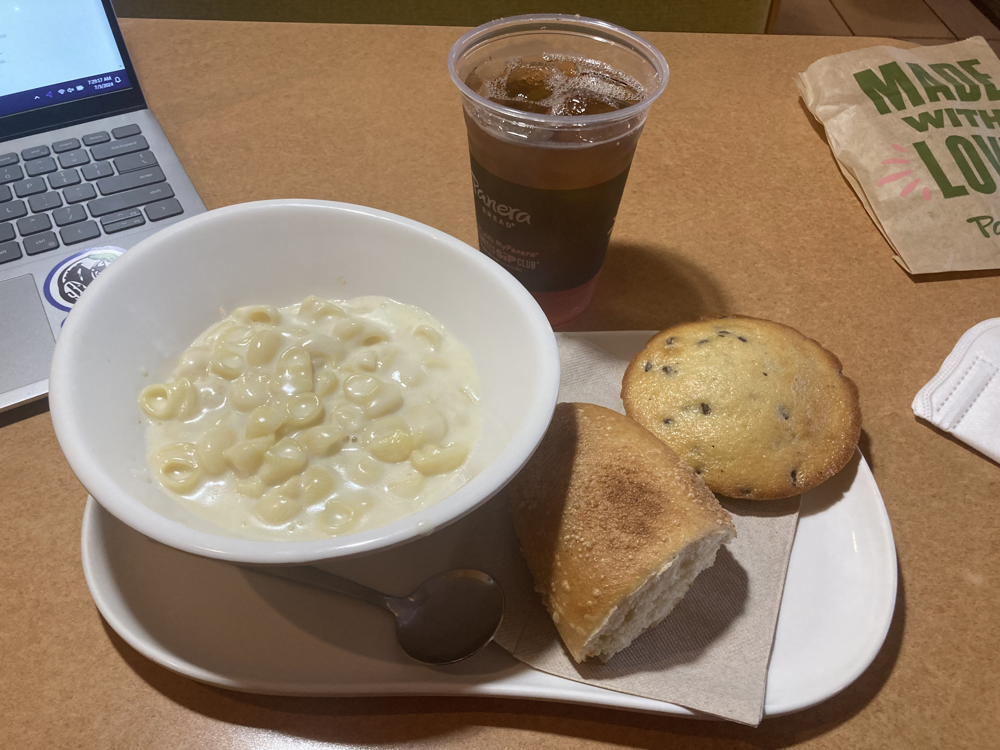

It's an early morning at the Panera Bread in Stillwater. I came here a few minutes ago, after being up since Midnight, and, y'know. Currently listening to

Scrumdiddlyumptious in the bad lighting. I accidentally chose the only stall with a non-warm lightbulb 🥶
Starting off, the iconic bagged Mac and Cheese. First bite? Creamy, scrumptious. The prime taste that it always should have. Some guy just walked by who reeked of marijuana, so now that's in my mental palate. Back for another bite. The cheesey umami is there in spades, overwhelming the nose and mouth. The quintessential mac. Next up, the baguette. Lotta baubles on it today. One bite raw, and it's much softer than last time I had Panera, with the skin of the bread deforming quite easily. It's sour, as it should be, and. Pleasant. With the cheese from the mac, the baguette takes upon a dark umber. Upon another bite, I notice said umber there definitively, but it's very much heightened by the taste of the cheese. Both of these are complimented extremely well by the unsweetened iced tea.
Main course finished. Yim yum! It's nice to know some things stay good. I had some Pepsi Mango a few days ago, after not having it in forever, and. Fuck, it wasn't fantastic. It wasn't bad — hell, it was quite good! — but I still have it on such a high perch in my mind. Maybe I've changed.
One thing's for sure: Panera's changed. They fucking got rid of the cranberry orange muffin! Those goddamn bastards! They cucked me and my palate! Idk what to get anymore after this. It's soooooo over. For this meal, I ended up getting a "chocolate chip muffie", because I was sent so wayward. It's light and oily as hell, bleh. Digging in, y'know? First bite, it tastes like a chocolate chip muffin if it was kinda dry and unsatisfying and middling. Bad first impression. It's spongey yet dry as hell. Does not synergize with unsweetened iced tea. Not gonna finish it, it's fuckinnnnnnn' highly bland 😭 no zhuzh. No flair!
Imagine an MP3 file of me burping while Apple from Charli xcx's
I met up with some friends 2 nights ago and hung out with them awhile. One of my pals was in town for a few days, due to a personal tragedy that happened to another friend of mine (they're holding up quite well, thankfully. I'm really proud of them), and so we hung out all night before they were driven to the airport to leave. We watched The Killer with another friend, and it was pretty cool. I homebrewed said other friend's DSi, after they asked me, so that was fun. The drive to the airport was real chill, though the way back was lowkey hellmode. Earlyyyyyy morning stuff, haha. Anyways, from the Panera, 'till next time!